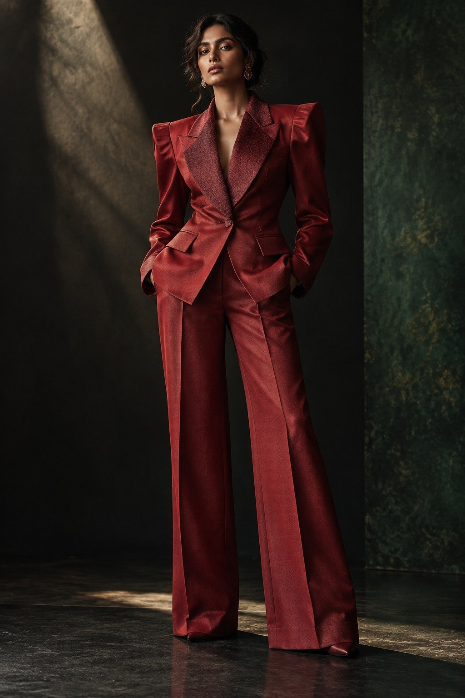
Colour, with conviction.
Jewel tones move beyond occasion dressing into monochromatic tailoring and sculptural eveningwear.
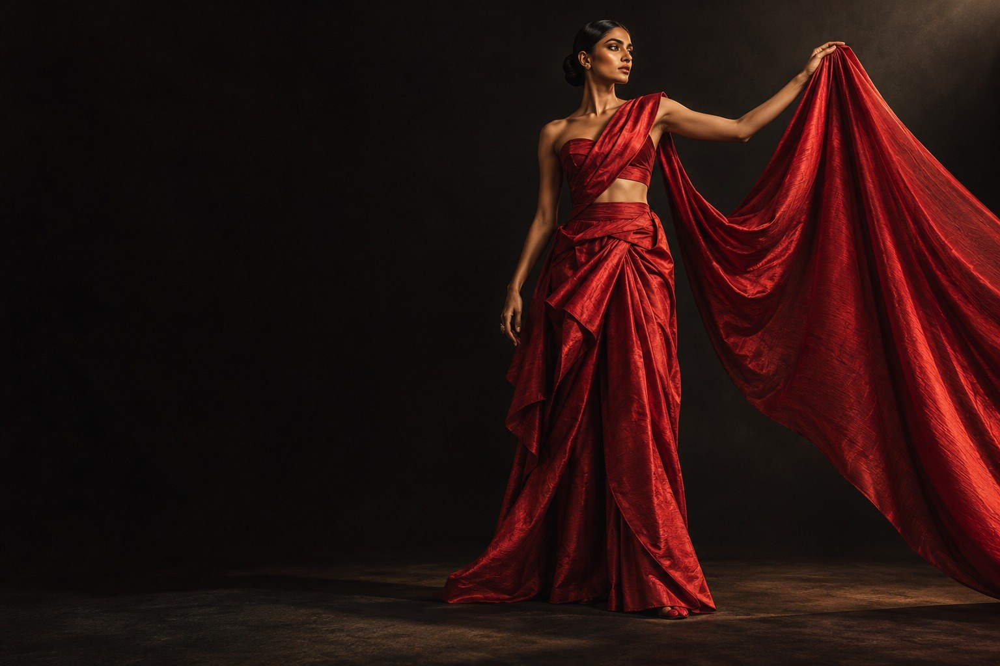
Across generations and geographies, cloth carries memory. VARNIKA explores what happens when those memories encounter new bodies, new places and new ways of dressing.
Fashion has always travelled. Techniques developed within one community find new expressions in another. Silhouettes change, materials evolve and generations reinterpret what they inherit.
VARNIKA was created to explore that movement.
This issue looks beyond the divide between “traditional” and “modern”. Instead, it considers fashion as a continuing conversation between memory, craftsmanship and contemporary identity.
Because heritage is not defined by where something remains.
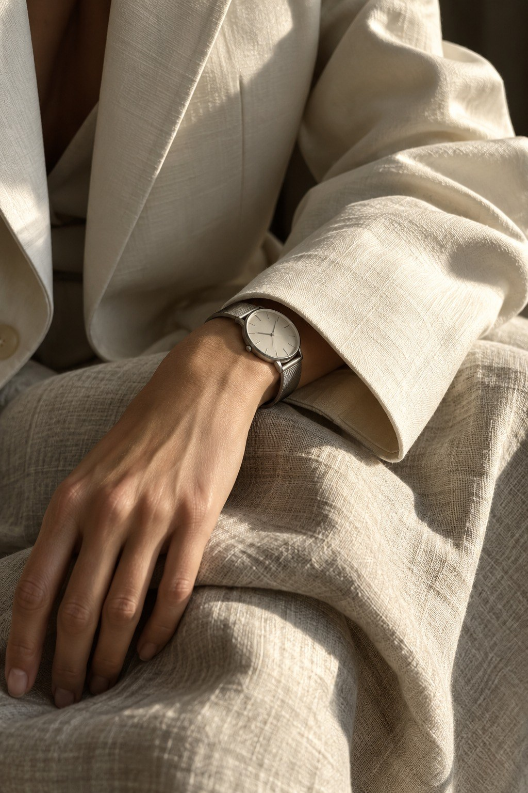
It is revealed by how
beautifully it evolves.
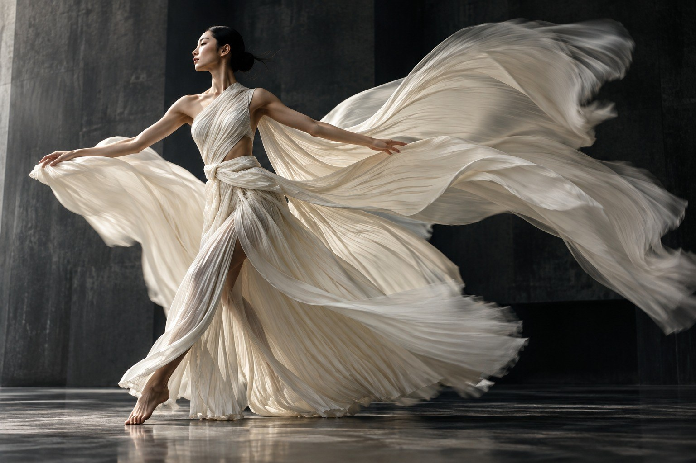
Before tailoring defined the body,
cloth moved around it.
Across cultures, draping became one of fashion’s earliest design languages. The sari, toga, sarong, hanbok silhouettes, wrapped garments and countless regional forms each developed distinct relationships between fabric, movement and identity.
Contemporary fashion is returning to that freedom, not by reproducing the past but by learning from its intelligence.
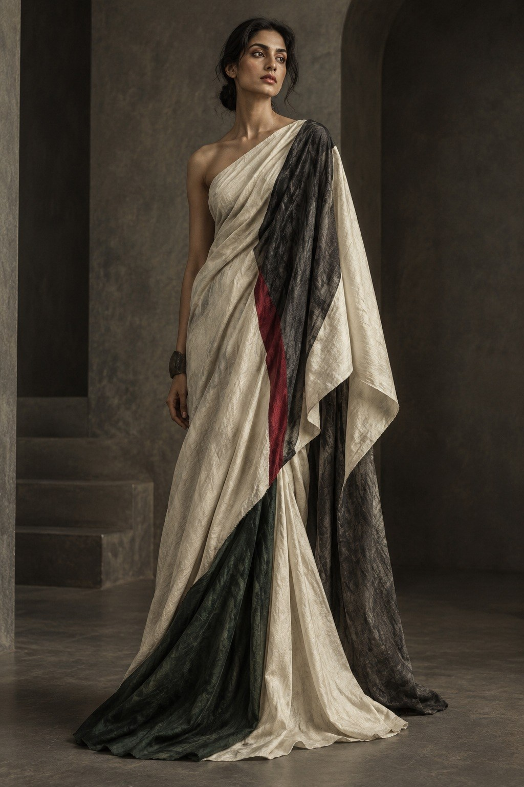
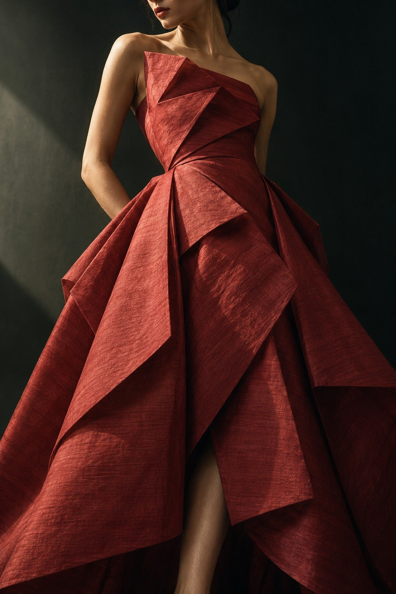
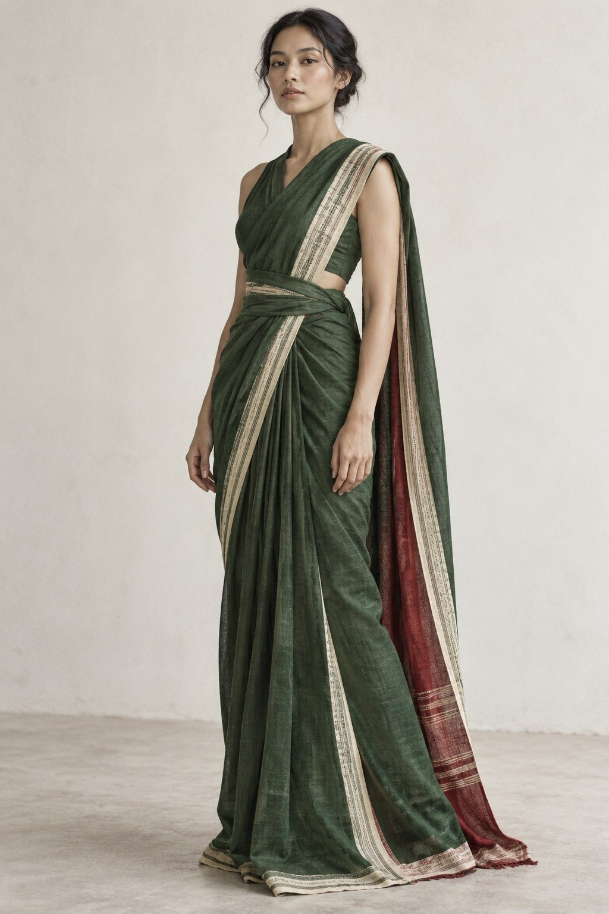
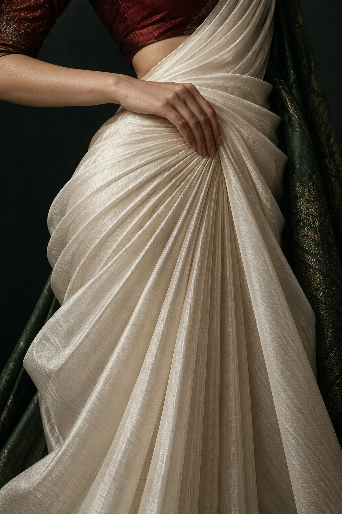
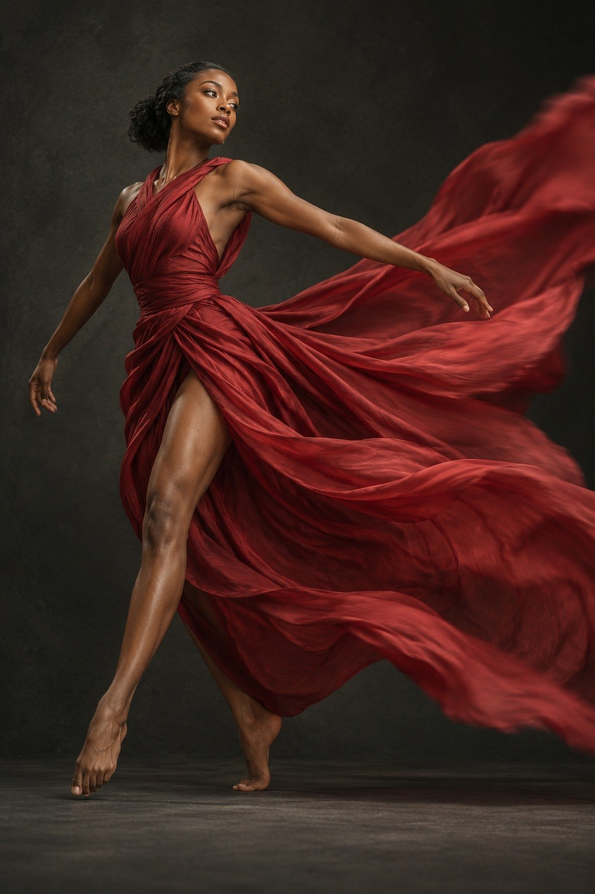
A textile can belong to a place
without being confined by it.
The irregularity of human craft becomes a mark of value rather than imperfection.
Techniques survive because generations reinterpret them, not because they remain unchanged.
Contemporary silhouettes give historic processes new contexts and new audiences.
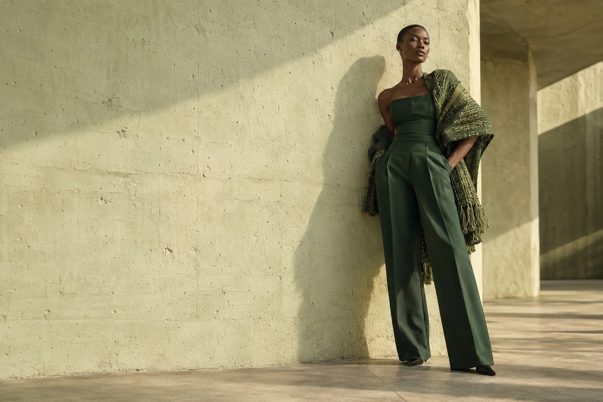
Old knowledge.
Entirely new possibilities.
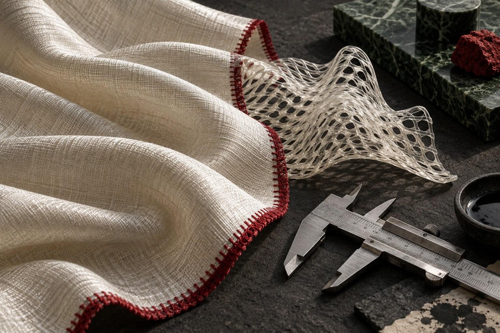
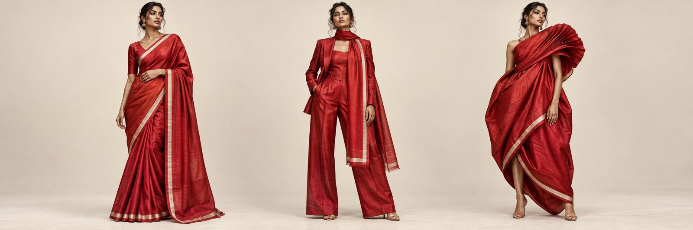
Craft takes centre stage. The cloth is wrapped and draped, letting its woven edge guide the silhouette.
Scarlet handwoven silk.
An ivory stripe. Three possibilities.